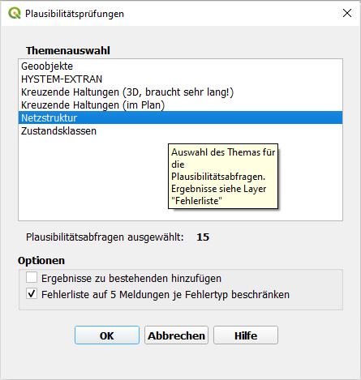
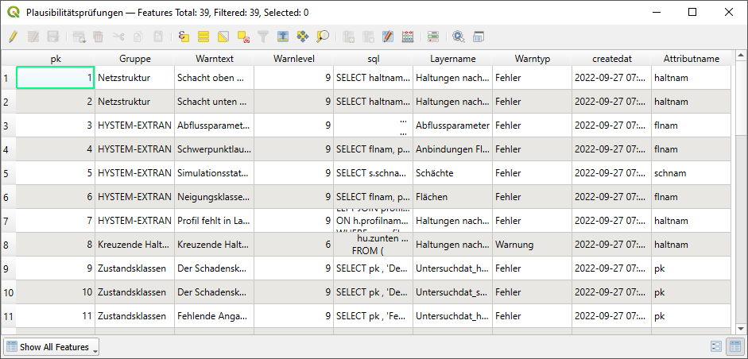
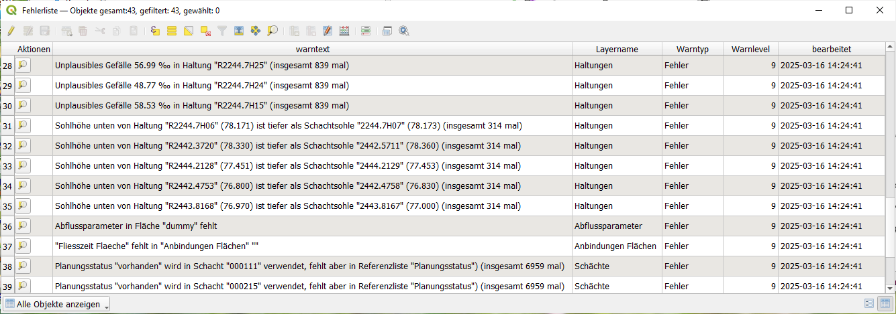

Daten
Plausibilitätsprüfung
Mit der Funktion Plausibilitätsprüfung können die verschiedenen Plausibilitätsprüfungen, welche unter der gleichnamigen Tabelle zu finden sind, bequem ausgeführt werden. Die zur Auswahl stehenden Themen entsprechen dabei den Gruppen aus der Tabelle „Plausibilitätsprüfungen“. In dieser Tabelle sind die einzelnen Plausibilitätsprüfungen, mit Beschreibung sowie der genauen SQL-Abfrage, zu finden.
 {kind=link}
Zur Durchführung können eine oder mehrere Themen ausgewählt und die entsprechenden SQL-Abfragen ausgeführt werden. Nach Durchführung der Plausibilitätsprüfung öffnet sich die Tabelle „Fehlerliste“ automatisch.
Hier werden die gefundenen Fehler aufgeführt und durch Klick auf das Symbol in der ersten Spalte „Aktionen“ kann das fehlerhafte Objekt in der Karte markiert und die Karte auf dieses Objekt gezoomt werden.
Durch die Option „Ergebnisse zu bestehenden hinzufügen“ wird die vorhandene Fehlerliste nicht überschrieben, sondern ergänzt. Die Option „Fehlerliste auf 5 Meldungen je Fehlertyp beschränken“ bewirkt, dass für jeden Fehlertyp maximal 5 Fälle aufgelistet werden, um einen besseren Überblick über die verschiedenen Fehlertypen zu ermöglichen. Am Ende jeder Warnung ist die Gesamtzahl je Fehlertyp aufgeführt.
Die Liste der Plausibilitätsprüfungen kann durch den Anwender ergänzt werden. Dazu muss in der Spalte „sql“ eine SQL-Abfrage eingetragen werden, die zwei Spalten liefert: - objid: Bezeichnung, anhand derer die aufzulistenden Objekte identifiziert werden können. - bemerkung: Beschreibung des Fehlers, gegebenenfalls mit zusätzlichen Informationen (z. B. fehlerhafte Länge)
Die in der Spalte „Gruppe“ eingetragende Bezeichnung erscheint in der Themenauswahl des Formulars „Plausibilitätsprüfungen“. Wichtig ist zu beachten, dass die von QKan vorgegebenen Datenprüfungen bei Updates automatisch geändert werden können. Um selbst ergänzte Plausibilitätsprüfungen davon auszunehmen reicht es aus, in der Spalte „Gruppe“ eine andere als die vorgegebenen Bezeichnungen zu verwenden, z. B. „Netzstruktur, ergänzt“, da nur die von QKan vorgegebenen Standardgruppen (z. B. „Geoobjekte“, „HYSTEM-EXTRAN“, „Netzstruktur“) von den Aktualisierungen betroffen sind (siehe auch Abbildung oben: „Plausibilitätsprüfungen“).
Auswahl erweitern / Netzverfolgung
Mit dem Tool  Auswahl erweitern/Netzverfolgung kann auf verschiedene Arten eine Auswahl
von Elementen im Kanalnetz erzeugt werden. Die ausgewählten Elemente werden
automatisch in den Datenbanktabellen sel_schaechte, sel_haltungen und sel_flaechen gespeichert.
Auswahl erweitern/Netzverfolgung kann auf verschiedene Arten eine Auswahl
von Elementen im Kanalnetz erzeugt werden. Die ausgewählten Elemente werden
automatisch in den Datenbanktabellen sel_schaechte, sel_haltungen und sel_flaechen gespeichert.

Bei einer erneuten Auswahl werden die bestehenden Einträge in diesen Tabellen automatisch überschrieben, sodass immer nur die aktuell ausgewählten Elemente berücksichtigt werden. Auswahlmöglichkeiten im Detail
- Kanalnetz oberhalb / unterhalb / längster Fließweg oberhalb
Für diese Auswahlmethoden muss mindestens ein Schacht im Kanalnetz ausgewählt werden.
Das Tool markiert automatisch alle Schächte, Haltungen und zugehörigen Flächen, die stromaufwärts oder stromabwärts vom ausgewählten Schacht liegen bzw. entlang des längsten Fließweges oberhalb.
- Auswahl zwischen zwei Elementen
Hierfür können entweder zwei Schächte oder zwei Haltungen ausgewählt werden.
Das Tool wählt automatisch alle Elemente aus, die zwischen diesen beiden Punkten liegen, unabhängig davon, wie viele Haltungen dazwischen liegen.
- Auswahl innerhalb von Teilgebieten
Um alle Elemente eines bestimmten Teilgebiets auszuwählen, muss das entsprechende Teilgebiet ausgewählt werden.
Das Tool markiert dann alle Schächte, Haltungen und Flächen, die zu diesem Teilgebiet gehören.
- Hinweise
Jede Auswahl wird sofort in den Datenbanktabellen gespeichert, sodass nachfolgende Funktionen wie Längsschnitt, Substanzklassifizierung oder Export direkt auf dieser Auswahl arbeiten können.
Bei Änderungen an der Auswahl empfiehlt es sich, die Tabellen ggf. zu aktualisieren, um sicherzustellen, dass alle Analysen auf den aktuellen Elementen basieren.
Längsschnitt
Mit dem Tool  Längsschnitt lassen sich Längsschnitte des Kanalnetzes erzeugen.
Längsschnitt lassen sich Längsschnitte des Kanalnetzes erzeugen.

Um den Längsschnitt nutzen zu können, müssen zunächst Elemente aus dem Layer „Schächte“ oder „Haltungen“ ausgewählt werden. Der Längsschnitt wird entweder zwischen zwei ausgewählten Elementen erzeugt oder entlang einer Reihe mehrerer ausgewählter Elemente. Wenn sich die Auswahl oder Eingaben ändern, kann über den Refresh-Button die Anzeige aktualisiert werden. Mit dem Button „Auswahl anzeigen“ lassen sich die für den Längsschnitt verwendeten Elemente erneut in der Karte markieren. Mit dem Button „Export in DXF“ kann eine DXF Datei vom aktuell angezeigt Längsschnitt abgespeichert werden. Wenn der maximale Wasserstand aktiviert ist, wird dieser mit exportiert. Damit die Anzeige des maximalen Wasserstands, der animierte Längsschnitt sowie die Ganglinie genutzt werden können, muss zunächst eine HYSTEM-EXTRAN-Ergebnisdatei ausgewählt werden. Im Anschluss kann im Reiter „Animierter Längsschnitt“ über den Button „Längsschnitt anzeigen“ der animierte Längsschnitt geöffnet werden Die Animation kann anschließend über die Steuerelemente im unteren Bereich in Bezug auf Abspielgeschwindigkeit und Zeitpunkt bedient werden. Im Reiter „Ganglinien“ lassen sich mit dem Button „Ganglinie anzeigen“ verschiedene Ganglinien aus den Ergebnisdaten erzeugen – beispielsweise Zufluss, Wasserstand oder Durchfluss.